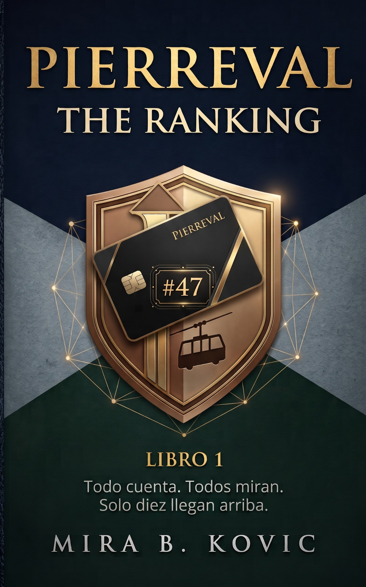

STUDENT FILE / HOLT
SLOANE
Quiere entender cómo funciona el sistema para ganarlo.
ADMISSIONS / 2026
TODO CUENTA. TODOS MIRAN.
SOLO DIEZ LLEGAN ARRIBA.
Uno de los internados más exclusivos de Europa. Un ranking que registra mucho más que tus notas. Y una pregunta que nadie debería necesitar hacerse: ¿qué puesto ocupas?
CONOCE THE RANKINGSLOANE HOLT
STATUS: PROVISIONAL
LA SAGA PIERREVAL / 01
Cada alumno tiene una puntuación. Cada decisión puede modificarla. El ranking decide quién accede a las mejores oportunidades, a los espacios reservados y a The Ten.
Sloane Holt empieza en el puesto 47. Para alguien que ha pasado toda su vida aprendiendo a ganar, eso solo significa una cosa: tiene un sistema nuevo que descifrar.
Nora Vale busca otra respuesta. Su hermana Clara desapareció de Pierreval sin dar explicaciones. Cuando la llegada de Sloane activa entre ambas una compatibilidad del 97,4 %, deciden investigar juntas.
Disponible en Amazon.
LIVE / STUDENT BOARD
SLOANE HOLT / NORA VALE
STUDENT FILE / HOLT
Quiere entender cómo funciona el sistema para ganarlo.
STUDENT FILE / VALE
Quiere saber qué hizo el sistema con su hermana.
LIFE AT PIERREVAL
LA SAGA PIERREVAL
#47
PUBLICADO#1
PRÓXIMAMENTE⌑
PRÓXIMAMENTEPIERREVAL ADMISSIONS
Diez decisiones. Cuatro variables. Un puesto inicial.